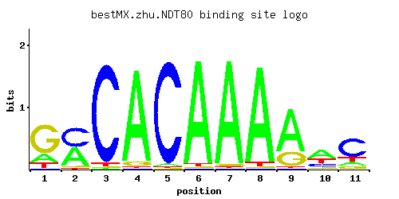

NDT80
YHR124W
Meiosis-specific transcription factor required for exit from pachytene and for full meiotic recombination; activates middle sporulation genes; competes with Sum1p for binding to promoters containing middle sporulation elements (MSE)
Best-performing DNA-binding model.

View and copy the recommended matrices ↘
A | 0.19 0.44 0.01 0.94 0.02 0.96 0.96 0.94 0.71 0.50 0.12 C | 0.02 0.48 0.94 0.01 0.96 0.01 0.01 0.01 0.02 0.18 0.63 G | 0.68 0.04 0.01 0.05 0.01 0.01 0.02 0.01 0.24 0.08 0.10 T | 0.12 0.03 0.03 0.01 0.01 0.02 0.01 0.04 0.02 0.24 0.15
A | 19 44 1 94 2 96 96 94 71 50 12 C | 2 48 94 1 96 1 1 1 2 18 63 G | 68 4 1 5 1 1 2 1 24 8 10 T | 12 3 3 1 1 2 1 4 2 24 15
A | -0.52 0.32 -3.47 1.08 -2.77 1.10 1.10 1.08 0.80 0.45 -0.98 C | -2.20 0.98 1.65 -2.89 1.67 -2.89 -2.89 -2.89 -2.20 0.00 1.25 G | 1.33 -1.50 -2.89 -1.28 -2.89 -2.89 -2.20 -2.89 0.29 -0.81 -0.59 T | -0.98 -2.37 -2.37 -3.47 -3.47 -2.77 -3.47 -2.08 -2.77 -0.29 -0.76
Alternative candidate matrices 3
Historical matrix candidates from the original ScerTF database. Expand a source to inspect its original logo, scores, and matrix values.
NDT80Foat et. al.P = 0.09193View matrix ↘
NDT80Morozov et. al.P = 0.6344View matrix ↘
NDT80Zhao and StormoP = 1View matrix ↘
Gene-level annotations and interactions.
Genes bound in ChIP-chip experiments 86 genes
YAL016W, YBR001C, YBR063C, YBR127C, YCR037C, YCR081W, YDL034W, YDL036C, YDL044C, YDL201W, YDR084C, YDR142C, YDR144C, YDR145W, YDR256C, YDR286C, YDR287W, YDR337W, YER013W, YER015W, YER041W, YGL143C, YGL149W, YGR004W, YGR093W, YGR166W, YGR188C, YGR218W, YGR271W, YHL017W, YHL022C, YHR085W, YHR104W, YHR117W, YHR120W, YIL068C, YJL175W, YJL203W, YJL204C, YJR012C, YJR013W, YJR033C, YJR034W, YJR041C, YJR042W, YJR069C, YJR071W, YKL172W, YLL032C, YLR082C, YLR118C, YLR119W, YLR199C, YLR200W, YLR239C, YLR240W, YLR277C, YLR319C, YLR320W, YLR426W, YML108W, YMR004W, YMR134W, YMR257C, YMR258C, YMR267W, YNL168C, YNL225C, YNL258C, YNL290W, YNL291C, YOL049W, YOL050C, YOL159C, YOR059C, YOR093C, YOR094W, YOR249C, YPL010W, YPL011C, YPL043W, YPL150W, YPL151C, YPL188W, YPL202C, YPL215W
Genes affected by TF deletion 182 genes
YDR004W, YER145C, YJR016C, YKR043C, YLR248W, YMR010W, YMR045C, YNL085W, YOL013W-A, YOR192C-A, YPL207W, YBR187W, YBR158W, YBR189W, YGL039W, YGR124W, YJL083W, YLR056W, YLR432W, YOR067C, YOR039W, YOR377W, YPR139C, YDR035W, YGL235W, YMR015C, YOR254C, YOR192C-B, YDR039C, YML104C, YGR151C, YPL016W, YBR068C, YFL045C, YHR051W, YJR145C, YLR340W, YLR372W, YOL104C, YOL077C, YOL142W, YPL266W, YPR016C, YDL158C, YDR280W, YDR341C, YGL135W, YGR214W, YIL018W, YJL177W, YLR186W, YLR188W, YML056C, YNL301C, YNR028W, YOR097C, YBR067C, YCR107W, YDL032W, YDL004W, YMR070W, YNL112W, YOL105C, YOL079W, YER029C, YJL210W, YKL199C, YML022W, YIL126W, YGR286C, YIL154C, YJR026W, YJR028W, YLR227W-A, YMR050C, YML125C, YNL087W, YNL061W, YOL021C, YOR199W, YOR231W, YAR010C, YGR160W, YGR103W, YHR156C, YJL059W, YKL056C, YNL284C-A, YOR043W, YLR256W-A, YMR049C, YNL054W-A, YOR262W, YPL244C, YPL183C, YAL014C, YGR159C, YHR124W, YDR537C, YLR344W, YLR350W, YNL123W, YNL187W, YNL313C, YPL092W, YLR343W, YMR079W, YJL156C, YDR022C, YHL026C, YKR087C, YLR230W, YLR293C, YNL065W, YNL069C, YOL002C, YOR207C, YPL254W, YPL257W-A, YDR345C, YGL055W, YER187W, YGR291C, YJR095W, YKR027W, YOL059W, YOL061W, YPL226W, YDL079C, YDR233C, YDR261W-B, YEL062W, YFR051C, YLR413W, YOL124C, YOL126C, YOR335C, YJR007W, YLR172C, YMR274C, YPL126W, YBR143C, YIR012W, YNL132W, YOR360C, YPR033C, YCL033C, YDL237W, YMR006C, YOR251C, YDR212W, YDR274C, YGR176W, YHR170W, YLR048W, YMR212C, YOR095C, YOR246C, YML018C, YMR217W, YPL012W, YDR186C, YHR044C, YLR398C, YOL103W-A, YDR331W, YDR365W-A, YLR180W, YML106W, YNL327W, YNR051C, YLR359W, YOL097C, YOL101C, YOL103W, YOR306C, YOR340C, YOR343C-A, YPR069C, YPR009W, YPR041W, YML075C